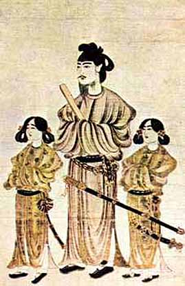
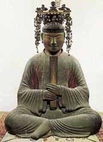

Later Mound Era
The reign of the Korean dynasty in Japan, the so-called first "five kings of Wa" (Odzin, Hanse, Ingyo, Anko and Yuryaku) refers to the late Kurgan period. During the reign of the "five kings of Wa", iron was imported from the Kreisky peninsula to the central Kinai region of Honshu.
In 413, Jingu sent an embassy to China with the aim of obtaining recognition of her son Ojin as the "King of Wa" (Japan). Similar embassies were sent with tribute under Odzin in 425, and under the younger brother Hanse in 438 to receive investiture from China and the title of commander-in-chief for the peace of the East. The Chinese emperor granted Hansho, and then other Japanese kings, the rank of general, not commander-in-chief ("jiang jun" in Chinese, "shogun" in Japanese).
|  |
In 531, civil war broke out between two influential groups: Otomo and Soga, of Korean origin. The latter won. The Sog group was able to rise to the point that they put their protégé King Kimmei (539-571) at the helm of the reign. Having strengthened economically, seizing the main levers of administrative and economic management, Soga in 587 struck a blow at the armed forces of the king - Mononobe, defeating them in the battle at Mount Sigi. Having deprived the king of support, Soga in 592 killed the supreme ruler himself and took power into their own hands, placing a woman named Suiko on the throne. Prince Umayado, who went down in history under the posthumous name of Shotoku-taisi, became the regent under the ruler. |
In 603, Shotoku-taiishi introduced a table of ranks. There were six of them, but each was subdivided into the highest and the lowest, forming a system of 12 ranks. The names of these ranks include five human properties developed by Confucianism. The highest rank was "virtue", which was assigned the purple color of clothing. Then came "humanity" - green, "ceremony" - red, "faith" - yellow, "truth" - white, and "wisdom" - black.
|
Shotoku-taisi sought to raise the authority of his country by giving it the name "Root of the Sun" ("Nihon", where "the sun is born and from where the sun rises"). This tendency manifested itself in the renaming of his "title" "Son of Heaven" ( tenshi ) into "Heavenly Sovereign" ( tenno ), identical to the emperor. In 643, the Soga again changed the title of their supreme ruler to Mikado, but all these renaming did not help to stabilize the situation in the country. |
 |

|

|